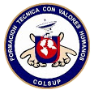

| Insignias Institucionales | |
| Nuestra Bandera | |
| El diseño de nuestra bandera, está directamente relacionado, con los colores representativos institucionales, que son el azul y el rojo magenta, cuya representación está descrita a continuación: ROJO MAGENTA: La continua búsqueda del éxito, la cual debe ser forjada a través del esfuerzo y el sentido del deber AZUL: La abundancia de las aguas, las cuales no tienen límite, como el continuo deseo de superación del ser humano que se forma en la institución. BLANCO: Transparencia y luz los cuales deben estar plasmados en la transparencia en el proceder de un ser humano reflexivo e integro en valores, respaldado por la luz del conocimiento | |
| Nuestro Escudo | |
En el escudo se representan los colores de la Institución, junto con el lema y los elementos más importantes que distinguen anhelos y objetivos de la comunidad educativa. El escudo consta de: |
|
MANOS: Las cuales representan los valores humanos, como principio fundamental de formación MUNDO Y ANTENA PARABÓLICA: La tecnología de punta y el conocimiento de vanguardia que debe complementar a los valores humanos para una formación integral. |
 |
LETRA U EN PERSPECTIVA: La inicial de universo, que contiene al mundo, ésta es la representación del conocimiento como un universo, para facilitar la asimilación de conocimientos con fundamento en bases sólidas. LEMA: Formación técnica con valores humanos |
|